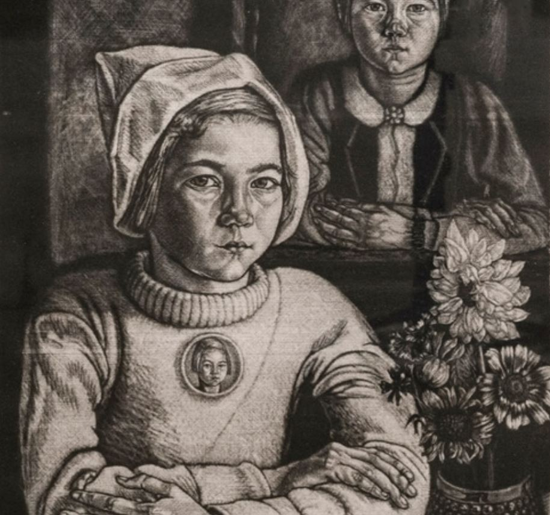
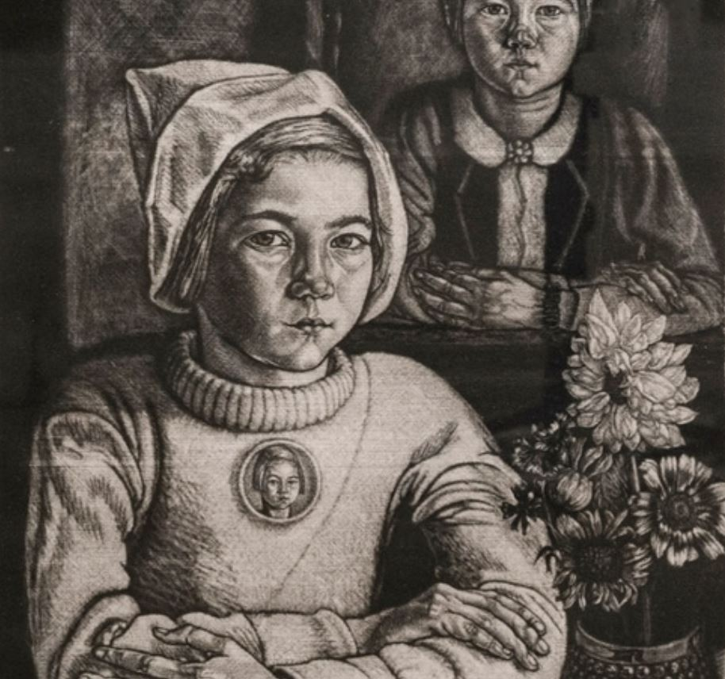

Eduard Wiiralt
Estonian graphic artist 1898 – 1954

Eduard Wiiralt (20 March 1898 – 8 January 1954) was a well-known Estonian graphic artist. In art history, Wiiralt is considered as the most remarkable master of Estonian graphic art in the first half of his century.
Eduard Wiiralt was born in Kalitino Manor, Tsarskoselsky Uyezd, Saint Petersburg Governorate to Estonian estate servants Anton and Sophie-Elisabeth Wiiralt. In 1909, the family moved to Estonia, where the father was employed in the Varangu estate in the Järva County. At age of 17, Wiiralt entered the Tallinn School of Applied Art. There one of his teachers was the Estonian painter and draughtsman, Nikolai Triik, who exerted strong influence on the work of the young artist. Wiiralt did not graduate, however, due to the start of the German occupation and revolution.
Wiiralt continued his studies in Tartu in the Pallas art school, working in the sculpture studio of Anton Starkopf in 1919. There the teachings in the art of engraving were guided by the manuals and the works of the old masters. This influenced his artistic technique even to his later years. The studies were interrupted by his participation in the Estonian War of Independence. In 1922–1923, Wiiralt continued his studies as a grantee of Pallas, in the Dresden Academy of Art in Germany; under the supervision of Professor Selmar Werner. In his works of that period a certain influence of German expressionism may be observed. Wiiralt returned to Tartu in the fall of 1923. In 1924 he graduated from Graphic Arts Department of art school Pallas leading its graphic studio during following year.
He went to Paris in 1925 and lived there almost without interruption until 1938. In Paris he created his etching Hell. In 1937 the International Graphic Exhibition in Vienna recognized him as the leading engraver in Europe, honoring him with its gold medal. From July 1938 to February 1939 he lived and worked in Marrakesh Morocco, returning the following year to his homeland Estonia.
He survived World War II in Estonia. In 1944, he made an attempt to return to Paris, but the war took him instead to Germany and later to Sweden. It was not until the fall of 1946 that he reached Paris again. At the end, he lived in the southern part of the city, Sceaux, at Rue Houdan 61. Eduard Wiiralt died at the age of 55 in Paris, in the Danncourt hospital due to gastric cancer and was buried in the Père Lachaise Cemetery on 12 January 1954.

 
